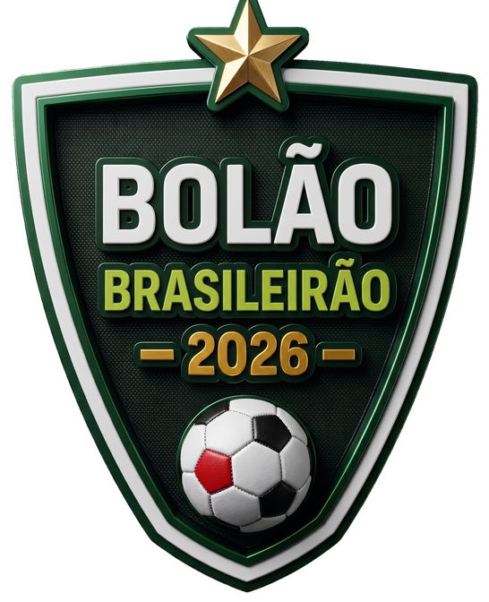

<!doctype html><html lang="pt-BR"><meta charset="utf-8"><meta name="viewport" content="width=device-width,initial-scale=1"><title>Central do Participante | Bolão Brasileirão 2026</title><link rel="stylesheet" href="./central.css?v=navegacao-2"><header><nav><a class="brand" href="#"><span>Bolão Brasileirão<small>CENTRAL DO PARTICIPANTE</small></span></a><div class="navlinks"><a href="#recursos">Funcionalidades</a><a href="#duvidas">Dúvidas</a><a class="outline" href="https://bolaorigazzo2026.netlify.app/">Abrir o bolão ↗</a></div></nav><div class="section-nav" aria-label="Seções da Central"><a href="#como-participar">Começar</a><a href="#recursos">Como usar</a><a href="#tutoriais">Vídeos</a><a href="#duvidas">Dúvidas</a></div></header><main id="app"></main><footer>Bolão Brasileirão 2026 · Central do participante<br><br>Regras e recursos apresentados para a temporada 2026.</footer><script src="./central.js?v=home-6514-1" defer></script></html>